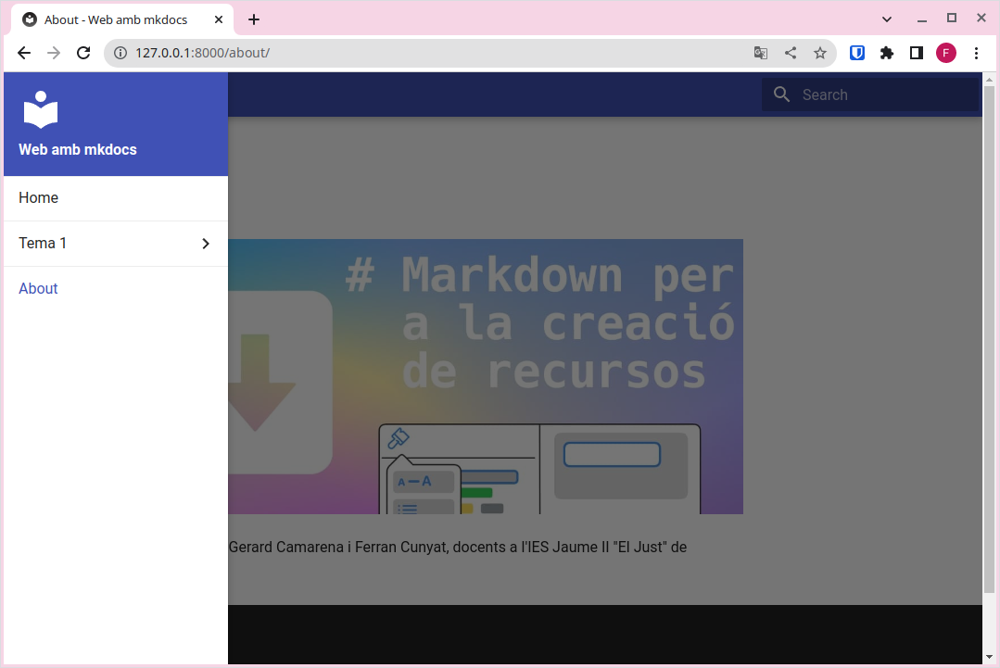

Configuració
Modifiquem l'arxiu mkdocs.yml
Tant l'mkdocs com el tema que escolliu tenen moltes possibilitats, però ací veurem la configuració bàsica. Si voleu configurar o personalitzar alguna cosa, haureu de consultar la documentació d'mkdocs o del tema segons el cas.
En este enllaç està la documentació de la configuració d'mkdocs https://www.mkdocs.org/user-guide/configuration/.
Tip
Al final de la unitat posarem de nou una versió completa i comentada d'un arxiu bàsic de configuració
site_name
L'única configuració que és necessària per a servir la web és el site_name, que serà una cadena de text que definirà el títol de la pestanya del navegador i apareixerà en el menú de navegació. Diriem que és el nom que defineix la nostra web, per tant serà la primera configuració que modificarem.
Per exemple, en el cas d'esta web, hem posat com a site_name: Web estàtica amb mkdocs
docs_dir
Amb la directiva site_dir, configurem en quina carpeta tenim els arxius font, és a dir el contingut en format markdown a partir del qual es generarà la web.
docs_dir
De moment podem deixar sense configurar el docs_dir, però serà necessari en apartats posteriors.
site_dir
Amb la directiva site_dir, configurem en quina carpeta volem que ens deixe la web llesta per a publicar.
site_dir
De moment podem deixar sense configurar el site_dir, però serà necessari en apartats posteriors.
Pàgines
Anem a veure en este apartat com configurar noves pàgines a la nostra web. Seran accessibles a través del menú de navegació.
El primer pas serà incorporar un nou arxiu .md amb contingut, per exemple, about.md a la carpeta docs.
Després modificarem l'arxiu de configuració per afegir al menú de navegació les nostres pàgines de la forma següent:
Ara la pàgina tindrà l'aspecte següent:
Pots observar que al menú de navegació ara tenim les opcions Home i About i també ens han aparegut unes fletxes de Previous i Next per poder navegar a través d'elles.
Es poden crear submenús al menú de navegació, configurant el mkdocs.yml:
| YAML | |
|---|---|

Buscador
Observeu que també disposem d'un buscador al menú de navegació que ens permetrà buscar a través del contingut de la web.
Buscador
Açò pot ser molt útil per als nostres alumnes a l'hora d'utilitzar els nostres recursos com a documentació de referència. Els permetrà localitzar ràpidament el contingut que busuqen.
Observeu que ens trobarà totes les ocurrències del contingut buscat en tot el lloc web, no sols en la pàgina actual.
Conversió a pdf
Si es fixeu, podeu trobar un botó a la dreta del títol que ens permet guardar el contingut actual en un pdf:

Això descarrega un arxiu PDF de la pàgina actual. Aquest PDF es genera en la construcció del lloc, afegint l'afegit que es mostra a continuació:
Info
- Es recomana posar aquest plugin quan ho tingues tot composat, sinò en cada guardat que es fa mentre està el servei en marxa es generen tots els PDF, el que pot suposar una compilació lenta.
- El PDF generat, conte el contingut
ad-hoc, sense cap mena de paginació ni resultat tan professional com l'obtingut a la unitat de PDF
Tema
Fins ara, hem utilitzat el tema per defecte per a renderitzar la pàgina, però existeixen altres temes per canviar l'aspecte a la nostra web, sense haver de canviar res al nostre contingut.
Per canviar el tema, editem l'arxiu de configuració i afegim una línia com la següent:
| YAML | |
|---|---|
Tema readthedocs

Tema mkdocs

Tema material

Temes per defecte
Mkdocs sols incorpora dos temes, mkdocs i readthedocs, però hi ha temes desenvolupats per tercers que podeu utilitzar. Simplement s'hauria de mirar a la documentació corresponent com posar-los en funcionament. Sol ser un procés molt senzill.
Al següent enllaç tens informació sobre altres temes per a mkdocs, https://github.com/mkdocs/mkdocs/wiki/MkDocs-Themes.
Material for mkdocs
Un tema molt complet, amigable i versàtil és material for mkdocs. Consulteu la documentació en cas de voler-lo utilitzar.
Per instal·lar-lo executeu pip install mkdocs-material.
Per utilitzar-lo theme: material.
Canviant l'icona de la nostra web
Per defecte, mkdocs utilitza la seua propia icona. Si volem utilitzar una icona diferent, crea un directori img a la carpeta docs i guarda una icona amb el nom favicon.ico, mkdocs el detectarà i el canviarà automàticament.
Afegint admonitions (caixes de l'estil awesomebox)
Per poder fer ús de les caixes per resaltar contingut, hem d'afegir el plugin admonition a l'arxiu de configuració:
A diferència d'awesomebox, les caixes a mkdocs es defineixen amb tres tancaments d'exclamació, i el contingut de dins la caixa va tabulat. Per exemple:
| Markdown | |
|---|---|
Anotació
Esta part si que la podeu provar a casa.
Compte!
Aneu amb compte al realitzar esta part.
Perill!!
No proveu açò a casa.
admonitions tancades
Si volem colapsar i obrir caixes d'admonitions, podem conseguir l'efecte canviat les tres exclamacions (!!!) per tres interrogants (???). Tambe podem fer que la caixa estigui oberta inicialment afegint un símbols +.
Per poder aconseguir-ho, hem d'activar aquest plugins, posant al mkdocs.yml el seguent:
| Text Only | |
|---|---|
Així si escrivim el següent codi,
| Text Only | |
|---|---|
El resultat seran aquestes vistoses capses.
Caixa tancada que podem obrir
Aquesta caixa puc obrir-la i tancar-la
Caixa oberta que podem tancar
Aquesta caixa puc tancar-la i obrir-la
Copiant codi font
Com be acabem de veure, dalt teniem una capsa amb codi font en format yaml. Quan blocs de codi pot resultar molt interessant el disposar d'un mecanisme per a copiar dit codi i porta-lo allà on vulguem (consola, un IDE, etc.)
Per activar aquest boto de copia i altres coses, podem afegir al mkdocs.yml el següents comportaments, dins de l'opció del tema:
| Text Only | |
|---|---|
Podem combinar-ho amb el plugin pymdownx d'abans per a numerar les línies, tot i això evitant el copiarles amb el botó anterior (clàssic problema al copiar i apegar codi des de arxius PDF)
Combinant el vist aanteriorment podem combinar-ho per a aconseguir coses com la següent:
| Text Only | |
|---|---|
donant com a resultat:
Quina és la estructura d'un programa Python?
| Python | |
|---|---|
Copia i prova el teu codi a un IDE
Construim el lloc web
Finalment, després d'haver comprovat al nostre ordinador que el resultat és l'esperat, construïm el lloc web, és a dir, el deixem enllestit per poder-lo penjar a un servidor amb l'ordre:
| Bash | |
|---|---|
Veuràs que es crea una carpeta site amb l'estructura següent:

Esta carpeta conté tots els arxius necessaris per servir la web, i és la carpeta que publiquen els servidors per a accedir a les seues respectives webs.
Resum
- Instal·lem mkdocs.
- Creem un nou projecte amb
mkdocs new "nom del projecte". - Servim el lloc en local i comprovem que tot va funcionant i es visualitza com desitgem amb
mkdocs serve. - Afegim el contingut en arxius .md a la carpeta docs.
- Enllacem els diferents arxius al menú de navegació modificant l'arxiu mkdocs.yml.
- Configurem el tema, el nom del lloc i la resta de configuracions que vulguem utilitzar.
- Construim el lloc amb
mkdocs build.